아이템
중요아이템

나무판(Wooden Panel)
입수방법 : 뗏목을 타고 동쪽사막으로 가서 노인과 동행을합니다.
그다음 리블마을 신전으로 가셔서 전투후 노인이 떠나면 상자안에 있습니다.
용도 : 리블에 있는 큰나무에 사용하시면 나무아래있는 입구가 열립니다.
반드시 A버튼을 누르셔서 메뉴를 여신다음 Item(아이템) 메뉴를 선택하신다음,
Use(사용)메뉴를 선택하시고 이 아이템을 선택하셔야합니다. C버튼으로는 안됩니다.
안에 있는 아킬레스검을 얻으실수가 있습니다.
사용하실곳
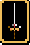
아킬레스검(Achilles Sword)
입수방법 : 나무판자기로 나무를 여신후 보물상자안에 있습니다.
용도 : 보우이에게 장착하시면 일단 아주 강력한 검이 됩니다.
그다음 핫산마을로 가셔서 로이드에게 말을 걸면 검을 알아보고 따라오게됩니다.
그다음 서쪽에 있는 타로스신전에 가시면 타로스와 싸울수 있게됩니다.
아킬레스검을 장착한 보우이만이 타로스를 물리칠수 있습니다.
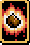
드라이 스톤(Dry Stone)
입수방법 : 드워프 광굴안의 불쏘시게에 있습니다.
얻으시는곳
용도 : 그란스섬의 드워프 마을에 들어가실수 있습니다.
레드바론전투후 북쪽에 있는 강가쪽으로 가보면 약간 납작한 강물줄기가 있는데
그곳에서 드라이 스톤을 쓰시면 물이 마르면서 드워프마을로 들어가실수가 있습니다.
반드시 A버튼을 누르셔서 메뉴를 여신다음 Item(아이템) 메뉴를 선택하신다음,
Use(사용)메뉴를 선택하시고 이 아이템을 선택하셔야합니다. C버튼으로는 안됩니다.
사용하실곳
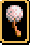
민들레의 솜털풍선(Cotton Balloon)
입수방법 : 체스판전투를 이기시면 상자가 나옵니다.
용도 : 얻으신후 만년필끄트머리에 가셔서 사용하세요.
반드시 A버튼을 누르셔서 메뉴를 여신다음 Item(아이템) 메뉴를 선택하신다음,
Use(사용)메뉴를 선택하시고 이 아이템을 선택하셔야합니다. C버튼으로는 안됩니다.
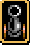
대포(Cannon)
입수방법 : 크리드의 저택에서 정령을 데리고 가신후 드워프 광굴로 가세요.
용도 : 혼자서는 안되고 반드시 다이나마이트와 함께 있어야합니다.
다이나마이트까지 얻으신후 파르메키아에 처음 상륙했을때 싸운 전투장소로 가셔서
또 전투를 하신후, 바위로 막혀진 동굴입구로 가시면 됩니다.
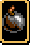
다이나마이트(dynamite)
입수방법 : 크리드저택을 떠나신후 다시 그란실로 되돌아와서 아스트랄과 대화를 한후
무기상점옆에 서있는 발명가에게 이야기를 하시면 됩니다.
얻으시는곳
용도 : 혼자서는 안되고 반드시 대포와 함께 있어야합니다.
대포까지 얻으신후 파르메키아에 처음 상륙했을때 싸운 전투장소로 가셔서
또 전투를 하신후, 바위로 막혀진 동굴입구로 가시면 됩니다.
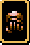
골렘의팔(Arm of Golem)
입수방법 : 모온마을전투후 마을의 서북쪽,마을의 왼쪽입구윗쪽에 가시면 있습니다.
그런다음 가까이 가신다음 A버튼을 누르신후 조사(Search)옵션을 누르시면 됩니다.
얻으시는곳
용도 : 로프트마을 아래쪽의 길로 나있는 마법의굴안의 골렘에게 대화를 하시면
동료가 됩니다.
사용하실곳
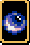
스카이 오브(Sky Orb)
입수방법 : 나즈카에서 카밀라를 무찌르세요.
용도 : 나즈카쉽을 작동하는데 필요합니다. 일단 징크를 모온마을에서 가이안을 얻으신후
같이 데려오신 다음 새같이 생긴 나즈카쉽의 눈으로 들어갑니다. 그런후 가장 왼쪽에
있는 조종석에서 가까이 가신후 사용하세요.
반드시 A버튼을 누르셔서 메뉴를 여신다음 Item(아이템) 메뉴를 선택하신다음,
Use(사용)메뉴를 선택하시고 이 아이템을 선택하셔야합니다. C버튼으로는 안됩니다.
포스 블래이드/카오스 브레이커(Force Sword)
입수방법 : 그라운드실/옛 그란실의 남쪽에 있는 고대신전에 가신후 프롤로그에서 슬래이드가
들어갔던데로 들어가시면 성검이 있는곳으로 가실수 있습니다.
그런다음 가까이 가신다음 A버튼을 누르신후 조사(Search)옵션을 누르시면 됩니다.
얻으시는곳
용도 : 그라운드실의 오른쪽에 있는 악마의 석상에서 사용하셔서 그라운드실로
들어가실수가 있습니다. 악마의 석상앞으로 가셔서 사용하세요.
반드시 A버튼을 누르셔서 메뉴를 여신다음 Item(아이템) 메뉴를 선택하신다음,
Use(사용)메뉴를 선택하시고 이 아이템을 선택하셔야합니다. C버튼으로는 안됩니다.
사용하실곳
전직아이템
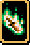
전사의 긍지(Warrior Pride)
입수방법 : 새로 지은 그란실마을의 작전본진안의 독수리문양에 있습니다.
얻으시는곳
사용할수 있는 캐릭터 : 쟈하,랜돌프
장점 : 기동력이 +1 올라가고 도끼보다 약간 강한 검을 쓰실수 있습니다.
단점 : 없습니다.
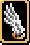
페가수스의 날개(Pegasus Wing)
입수방법 : 파카론성의 파카론왕이 있는곳에서 카펫을 따라 쭈욱 내려가신 다음 몇칸정도
오른쪽으로 가신후 아래쪽을 뒤지세요.
얻으시는곳
사용할수 있는 캐릭터 : 체스터,릭,에릭
장점 : 날아다닐수 있습니다.
단점 : 너무 늦게 입수합니다.
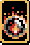
기합의 구슬(Vigor Ball)
입수방법 : 첫번째것은 요정숲마을의 북서쪽 보물상자에 있습니다.
얻으시는곳
두번째것은 쉴라를 얻으실때 홀로있는 나무를 뒤지시면 있습니다.
얻으시는곳
사용할수 있는 캐릭터 : 사라,카르나
장점 : 공격력이 좋은 장갑을 쓰실수 있습니다.
단점 : 없습니다.
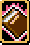
비밀의책(Secret Book)
입수방법 : 요정숲마을 집의 2층, 오른쪽 책장에 있습니다.
얻으시는곳
사용할수 있는 캐릭터 : 카진,타이린
장점 : 단독의 적을 공격하면 엄청난 대미지를 주는 소환마법을 쓸수 있습니다.
단점 : 다수의 적을 공격하면 대미지가 공평히 나누어집니다.
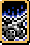
실버탱크(Silver Tank)
입수방법 : 볼카논을 만나러 베도로 갈때 홉고블린과의 전투가 있었던 어두운 동굴의
보물상자안에 있습니다.
얻으시는곳
사용할수 있는 캐릭터 : 엘릭,쟈넷
장점 : 방어력이 아이템없이 전직했을때보다 많이 올라갑니다.
무기가 없어도 공격할수 있습니다. (물론 별로 장점은 아니겠죠? ㅡ,.ㅡ)
단점 : 민첩성이 아이템없이 전직했을때보다 더 적게 올라갑니다.
능력치 올리는 아이템
(이 아이템들은 한번 쓰시면 효과가 평생 지속됩니다. 한번 사용하신후 4까지 안올라가시면 리셋하셔서
다시 하시곤 해보세요. 질풍의 피망을 제외하면 전직전에 쓰셔도 괜찮으시지만 그래도 일단 모두 전직후
사용하시는것을 추천합니다. 누구에게 줄지 분명해지거든요.)
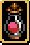
힘의약수(Power Water)
입수장소 : 그란실 남쪽신전,리블아래의 고대신전,미튤라신전안
용도 : 아군한명의 공격력(ATT)을 2~4포인트 올려줌
설명 : 키위같은 공격력이 낮은 캐릭터에게 사용합시다. 법사에겐 쓸 필요가 없겠죠?
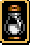
보호의우유(Protect Milk)
입수장소 : 폴카마을의 땅아래로 지어진집안,트리스탄굴의 보물상자
용도 : 아군한명의 방어력(DEF)을 2~4포인트 올려줌
설명 : 타야같은 방어력이 약한 캐릭터에게 사용합시다. 주실 캐릭터를 고르실때
HP까지 모두 감안하셔야합니다.
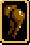
민첩의통닭(Quick Chicken)
입수장소 : 그란실의 배,일마을에서 챠즈를 동료로 얻은후 동굴에서
용도 : 아군한명의 민첩성(AGI)을 2~4포인트 올려줌
설명 : 쟈하같이 늦게 움직이는 캐릭터에게 사용합시다.
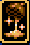
광명의꿀(Bright Honey)
입수장소 : 리블 남동쪽집의 항아리,케토마을
용도 : "마법"을 쓰는 아군한명의 MP를 2~4포인트 올려줌
설명 : 꼭 MP가 있는 캐릭터여야만 합니다. MP가 부족한 보우이나 슬래이드에게 줘도 좋고
다른 마법사들에게 줘도 좋습니다.
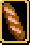
건강의빵(Cheerful Bread)
입수장소 : 새로 지어진 그란실성,파카론에서의 항아리
용도 : 아군한명의 HP를 2~4포인트 올려줌
설명 : 키위같이 방어력은 멀쩡하지만 HP가 터무니 없는 캐릭터에게 줍시다. 너무 방어력이
낮은 타야에게도 써도 좋습니다. 주실 캐릭터를 선택하실때는 방어력까지 감안합시다.
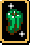
질풍의피망(Running Pimento)
입수장소 : 핫산의 여관에,로프트의 지하에
용도 : 아군한명의 기동력(MOV)을 2~4포인트 올려줌
설명 : 징크와 클라우드같이 기동력이 4칸밖에 안되는 캐릭터에게 사용하시면 좋습니다.
*한가지 주의드리겠는데 전직전에 사용하지 마세요. 전직하시면 효과가 없어지는
유일한 아이템입니다.
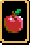
용기의사과(Brave Apple)
입수장소 : 엘릭이 연 크리드의저택으로 가는 굴의 비밀통로,쉴라를 얻는 도장
용도 : 아군한명의 레벨을 1 올려줌
설명 : 키위같이 노가다하기가 귀찮은 캐릭터에게 줍시다. 되도록이면 경험치(EXP)가 0에
가까울때 쓰시면 이득입니다. 만약 경험치가 99때 쓰신다면 경험치만 1올라가는꼴이니까요.
전투에서만 사용할수있는 아이템
(아이템을 사용하시려면 메뉴를 여신후 Item,Use 옵션을 고르신다음 선택하세요. 만약 아이템이 꽉차셔서
적이 떨구는걸 못줏으시면 나중에 가게에서 Deal섹션에서 구입하실수가 있습니다.)
천사의 날개(Angel Wing)
입수장소 : 가게에서 구입
용도 : 에그레스와 같은 효과입니다. 전군을 후퇴합니다.
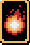
샤이닝볼(Shining Ball)
입수장소 : 하피연못으로 가기전의 전투에서 적이 떨굼,(미튤라신전밖에서의 전투 : 일본판만 입수가능)
용도 : 한명의 적에게 20정도의 대미지를 줌
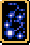
블리자드(Blizzard)
입수장소 : 바위를 대포로 터치러 갈때 싸우는 전투,로프트마을
용도 : 한명의 적에게 33정도의 대미지를 줌
성스러운번개(Holy Thunder)
입수장소 : 게슙전투다음전투
용도 : 한명의 적에게 50정도의 대미지를 줌
회복아이템
회복의 약초(Medical Herb)
입수장소 : 가게에서 구입,혹은 기타 전투/장소
용도 : 자신혹은 자신과 가까이 있는 아군에게 10HP를 회복함
회복의 씨앗(Medical Seed)
입수장소 : 가게에서 구입,혹은 기타 전투/장소
용도 : 자신혹은 자신과 가까이 있는 아군에게 20HP를 회복함
회복의 물방울(Medical Drop)
입수장소 : 가게에서 구입
용도 : 자신혹은 자신과 가까이 있는 아군에게 30HP를 회복함
회복의 약수(Healing Water)
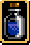
입수장소 : 타로스신전,케토,드워프마을,갈람성보물상자
용도 : 자신혹은 자신과 가까이 있는 아군의 HP를 전부 회복함
회복의 비(Healing Rain)
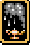
입수장소 : 크리드저택의 보물상자,보너스전투의 블루샤만,제온과의 마지막 전투
용도 : 전군의 HP를 모두 회복함
해독초(Antidote)
입수장소 : 가게에서 구입,혹은 기타 전투/장소
용도 : 자신혹은 자신과 가까이 있는 아군의 독을 치료함
정령의가루(Fairy Powder)
입수장소 : 가게에서 구입,혹은 기타 전투/장소
용도 : 자신혹은 자신과 가까이 있는 아군의 독/혼돈을 치료함
정령의눈물(Fairy Tear)
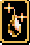
입수장소 : Deal,몇몇보물상자들,전투 25/38/40
용도 : 자신혹은 자신과 가까이 있는 아군의 MP를 20 채워줌
희망의빛(Light of Hope)
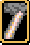
입수장소 : 보너스전투 (일본판만 입수가능)
용도 : 전군의 MP를 모두 회복함
장착아이템
(장착아이템을 장착하시려면 메뉴를 여신후 Item(아이템)옵션을 선택하시고 Equip(장착)옵션을
선택하신 다음 아이템을 장착하고 싶으신 캐릭터를 선택하신후 장착하실 무기/아이템들을
선택하시면 됩니다. 에뮬레이터로는 레몬은 장착이 안됩니다.)
(힘의반지,보호의반지,백의반지,흑의반지,악의반지의 경우에는 장착할수있을뿐만 아니라 Item->Use
메뉴를 이용하여 아군/타군에게 특별한 효과를 줄수도 있습니다. 하지만 너무 자주 쓰면
깨질려고 하고 거기서 한번 더쓰면 없어져버리니 깨질려고 하면 무기/도구상점에 가서 고칩시다.
말은 한후 REPAIR(수리)옵션을 고른후 깨질려고 하는 아이템을 선택하면됩니다.
아니면 카라밴에 넣어두었다가 다시 꺼내면 자동적으로 수리가 됩니다.)
뾱뾱이신발(Chirrup Sandals)
입수장소 : 갈람감옥의 탁자에서
얻으시는곳
용도 : 장착한 캐릭터가 걸어다니면 뾱뾱소리가 남. 적의 주요타겟이 되는것도 같음
보우이나 슬래이드에게 장착하지 않은 상태로 그대로 두면 HIGINS라는 마법을 배울수도 있음.
(HIGINS 마법은 버그이므로 아무런 효과도 없습니다.)
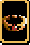
힘의반지(Power Ring)
입수장소 : 매이를 동료로 맞히한 바로 다음 전투에서 마녀(Witch)가 가지고 있음
용도 : 장착하시면 공격력(ATT)이 +5가 올라갑니다. Item->Use로 다른 캐릭터에게 사용하시면
그 캐릭터의 공격력을 잠시동안 올려줍니다. (어택효과)
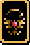
민첩의반지(Quick Ring)
입수장소 : 베도 2층의 항아리에 있습니다.
얻으시는곳
용도 : 장착하시면 민첩성(AGI)이 +5가 올라갑니다. Item->Use로 자신을 포함한 주위의
5명까지의 아군에서 사용하시면 그 캐릭터들의 민첩성과 방어력을 잠시동안
올려줍니다. (부스트 레벨1 효과)
민첩의반지(Quick Ring)
입수장소 : 베도 2층의 항아리에 있습니다.
얻으시는곳
용도 : 장착하시면 민첩성(AGI)이 +5가 올라갑니다.
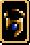
보호의반지(Protect Ring)
입수장소 : 크리드의저택으로 향하는전투에 다크마담(Dark Madam)이 가지고 있음.
용도 : 장착하시면 방어력(DEF)이 +5가 올라갑니다. Item->Use로 자신을 포함한 주위의
5명까지의 아군에서 사용하시면 그 캐릭터들의 민첩성과 방어력을 잠시동안
올려줍니다. (부스트 레벨1 효과)

질풍의반지(Running Ring)
입수장소 : 크리드저택에서 책상왕국이 있었던곳입니다.
얻으시는곳
용도 : 장착하시면 기동력(MOV)이 +2가 올라갑니다.
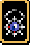
백의반지(White Ring)
입수장소 : 드워프마을의 보물상자.
얻으시는곳
용도 : 보우이와 프래이자, 그밖에 매스터멍크가 아닌 클래스로 전직한 사라/카르나만 사용이 가능합니다.
방어력(DEF)이 +10 올라갑니다. Item->Use로 주위의 다수의 아군에서 사용하시면
그 캐릭터들의 HP를 15정도 회복시켜줍니다. (오라 레벨2 효과)
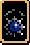
흑의반지(Black Ring)
입수장소 : 게슙이 처음 등장한 전투
용도 : 전직한 카진,타이린,타야,챠즈만 사용이 가능합니다. 장착하시면 저주가 걸립니다.
공격력(ATT)이 +10 올라갑니다. Item->Use로 주위의 적들에게 사용하시면 블래이즈 레벨2의
효과를 보실수 있습니다. 사실 마법사들의 주특기는 공격력이 아니기 때문에, 또
저주까지 걸리기 때문에 별 소용없다고 봅니다만, 장착하시지 마시고 그냥 가지고
다니면서 가끔 블래이즈 레벨2나 써주세요.
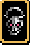
악의반지(Evil Ring)
입수장소 : 게슙이 패배한후 다음 전투
용도 : 전직한 카진,타이린,타야,챠즈,프래이자, 그리고 매스터멍크가 아닌 대사(VICR)로 전직한
사라,카르나만 사용가능합니다. 장착하시면 저주가 걸립니다.
공격력(ATT)이 +15 올라갑니다. Item->Use로 주위의 적들에게 사용하시면 볼트 레벨2의
효과를 보실수 있습니다. 사실 마법사들의 주특기는 공격력이 아니기 때문에, 또
저주까지 걸리기 때문에 별 소용없다고 봅니다만, 장착하시지 마시고 그냥 가지고
다니면서 가끔 볼트2나 써주세요.
회복의반지(Life Ring)
입수장소 : 요정의숲의 보너스전투 (일본판 전용)
용도 : 일단 장착하시려면 전직을 하셔야 하고요, 턴당 HP가 5씩 회복됩니다.
무기
검
무기 이름 공격력 특수효과
(보우이,루크,스크리치,레몬,전직한 슬래이드,바론으로 전직한 쟈하 혹은 랜돌프)
Wooden Sword(목검) +3 없음
Short Sword(쇼트소드) +5 없음
Middle Sword(미들소드) +9 없음
Long Sword(롱소드) +12 없음
Steel Sword(강철검) +16 없음
(보우이전용-*아킬레스검을 제외한 나머지 무기는 전직을 해야 쓸수있음)
Achilles Sword(아킬레스검) +19 타로스에게 대미지를 줄수있음
Levanter(레반터) +42 사용하면 블래이즈 레벨3 효과
Force Sword(포스블레이드) +46 게임진행상 필요한 무기
(전직한 보우이,전직한 루크,스크리치,레몬,전직한 슬래이드,바론으로 전직한 쟈하 혹은 랜돌프)
Broad Sword(넒은검) +22 없음
Buster Sword(버스터검) +26 없음
Great Sword(그레이트소드) +29 없음
Critical Sword(크리티컬소드) +32 미스릴무기,더욱 강한 공격을 할수 있는 확률이 높아짐
Dark Sword(어둠의검) +50 방어력 -5,저주 *비추
(전직한 보우이,전직한 루크,스크리치,레몬,바론으로 전직한 쟈하 혹은 랜돌프)
Battle Sword(배틀소드) +35 미스릴무기
Counter Sword(카운터소드) +35 미스릴무기,적에게 직접공격당했을때 카운터공격을 할 확률이 높아짐 *추천
(전직한 슬래이드전용)
Katana(일본도) +34 미스릴무기
Ninja Katana(닌자일본도) +39 미스릴무기
Gisarme(기사름) +42 미스릴무기,가끔 적을 한방에 죽일수 있음 *추천
단검(전직하지 않은 슬래이드전용)
무기 이름 공격력 특수효과
Short Knife(짦은칼) +5 없음
Dagger(단검) +8 없음
Knife(칼) +12 없음
Thieve's Dagger(도둑용단검) +18 없음
창/투창
무기 이름 공격력 특수효과
(체스터,릭,에릭,히긴스,쟈로)
Wooden Stick(나무막대기) +3 사정거리 1칸
Short Spear(쇼트스피어) +6 사정거리 2칸
Bronze Lance(브란즈랜스) +9 사정거리 1칸
Spear(스피어) +12 사정거리 2칸
Steel Lance(스틸스피어) +16 사정거리 1칸
Power Spear(파워스피어) +20 사정거리 2칸
(전직한 체스터,전직한 릭,전직한 에릭,히긴스,쟈로)
Heavy Lance(헤비랜스) +23 사정거리 1칸
Javelin(재블린) +26 사정거리 2칸
Chrome Lance(크롬랜스) +31 사정거리 1칸
Valkyrie(발키리) +33 사정거리 2칸/미스릴무기/사용하면 부스트 레벨1 효과
Halberd(할버드) +37 사정거리 1칸/미스릴무기/사용하면 볼트1 효과
Holy Lance(홀리랜스) +39 사정거리 1칸/미스릴무기/방어력(DEF) +5 상승/사용하면 10HP 회복 *추천
Mist Javelin(미스트재블린) +42 사정거리 2칸/미스릴무기 *추천
Evil Lance(이블랜스) +48 사정거리 1칸/기동력(MOV) -2 하락/저주,그라운드실로 들어가는
입구에서 악마의 입을 열기전에 얻으셔야합니다. *비추
도끼
무기 이름 공격력 특수효과
(쟈하,랜돌프,가이안,레몬)
Short Axe(쇼트액스) +5 없음
Hand Axe(핸드액스) +9 없음
Middle Axe(미들액스) +13 없음
Power Axe(파워액스) +17 없음
(전직한 쟈하,전직한 랜돌프,가이안,레몬)
Battle Axe(배틀액스) +21 없음
Large Axe(라지액스) +25 없음
Great Axe(그레이트액스) +28 없음
Heat Axe(히트액스) +32 미스릴무기/사용하면 블래이즈2의 효과
Atlas Axe(아틀라스액스) +35 미스릴무기/사용하면 블래이즈3의 효과
Ground Axe(그라운드액스) +39 미스릴무기/기동력(MOV) +1 증가 *추천
Rune Axe(룬액스) +42 미스릴무기/사용하면 디톡스1의 효과 *추천
Evil Axe(이블액스) +50 방어력 -5 하락/저주,포스블래이드를 얻으신후 신전의 보물상자에
있습니다. *비추
지팡이
무기 이름 공격력 특수효과
(카진,타이린,타야,챠즈,프래이자,매스터멍크가 아닌 사라/카르나)
Wooden Rod(나무지팡이) +3 없음
Short Rod(쇼트로드) +5 없음
Bronze Rod(브란즈로드) +8 없음
Iron Rod(아이언로드) +12 없음
Power Stick(파워스틱) +15 없음
(전직한 카진,전직한 타이린,타야,챠즈,프래이자,매스터멍크가 아닌 대사(VICR)로 전직한 사라/카르나)
Flail(플래일) +19 없음
Guardian Staff(가디안지팡이) +22 방어력(DEF) +5 상승 *추천
Indra Staff(인드라지팡이) +25 적의 MP를 약간 빼앗아감
Great Rod(그레이트로드) +28 미스릴무기
Mystery Staff(미스테리지팡이) +39 미스릴무기/턴당 MP가 2씩 회복 *추천
Demon Rod(데몬로드) +50 적의 MP를 약간 빼앗아감/저주,드워프마을의 항아리에 있음 *비추
(전직한 카진,전직한 타이린,타야,챠즈)
Mage Staff(법사지팡이) +27 미스릴무기/사용하면 블래이즈2의 효과
Supply Staff(보충의지팡이) +32 미스릴무기/적의 MP를 약간 없앰
Freeze Staff(얼음의지팡이) +37 미스릴무기/사용하면 프리즈3의 효과
(프래이자,매스터멍크가 아닌 대사(VICR)로 전직한 사라/카르나)
Wish Staff(소망의지팡이) +26 미스릴무기/사용하면 부스트1의 효과
Holy Staff(성스러운지팡이) +29 미스릴무기/턴당 2HP씩 회복
Goddess Staff(여신의지팡이) +31 미스릴무기/사용하면 오라2의 효과
화살
무기 이름 공격력 특수효과
(매이,엘릭,쟈넷,로이드)
Wooden Arrow(나무화살) +5 없음
Iron Arrow(철화살) +7 없음
Steel Arrow(강철화살) +12 없음
(전직한 매이,전직한 엘릭,전직한 쟈넷,전직한 로이드)
Robin Arrow(로빈화살) +17 없음
Assault Shell(어설트셸) +25 없음
Great Shot(그레이트샷) +29 없음
Nazca Cannon(나즈카캐넌) +33 없음/나즈카쉽안에 있음
Buster Shot(버스터샷) +37 미스릴무기
Hyper Cannon(하이퍼캐넌) +40 미스릴무기
Grand Cannon(그랜드캐넌) +43 미스릴무기/사용하면 머들1의 효과 *추천
Evil Shot(이블샷) +51 방어력(DEF) -5 하락/저주/갈람성의 북쪽대문의 왼쪽 수풀에 있음 *비추
장갑
(쉴라,매스터 멍크로 전직한 사라/카르나)
Leather Glove(가죽장갑) +26 없음
Power Glove(파워글러브) +33 없음
Brass Knuckles(브라스너클스) +39 없음
Iron Knuckles(아이언너클스) +43 없음
Misty Knuckles(미스티너클스) +48 미스릴무기/적의 MP를 약간 빼앗아감
Giant Knuckles(자이언트너클스)+55 미스를무기/사용하면 머들1의 효과
Evil Knuckles(이블너클스) +63 저주,일마을의 지하에 있음 *비추
{kind=link}
{kind=link}
{kind=link}
{kind=link}
{kind=link}
{kind=link}
{kind=link}
{kind=link}
{kind=link}
{kind=link}
{kind=link}
{kind=link}
{kind=link}
{kind=link}
{kind=link}
{kind=link}
{kind=link}
{kind=link}